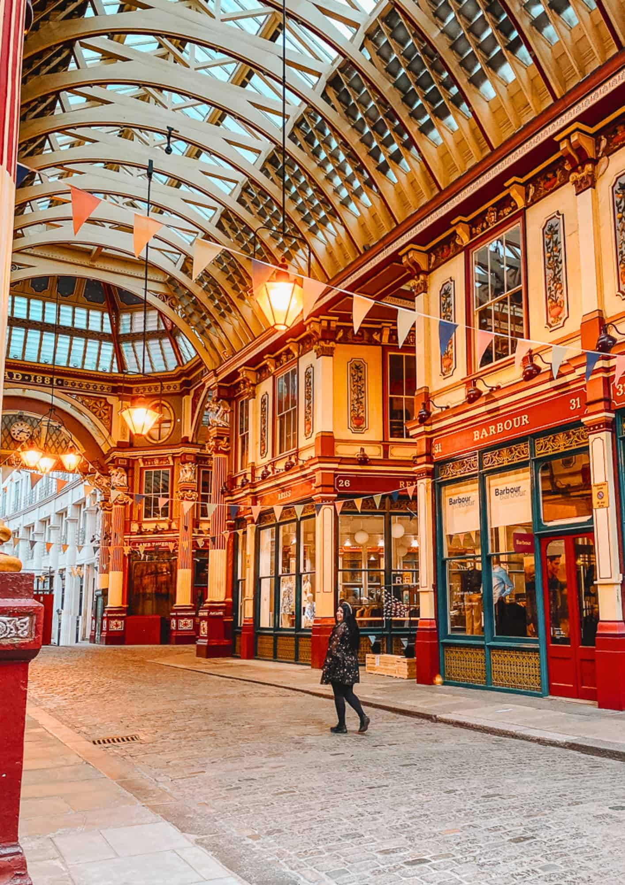

London

Platform 9¾
At King's Cross station you can take a photo with a luggage trolley that seems to vanish into the wall.
Leadenhall Market
This Victorian covered market appears in the first film as the street leading to the Leaky Cauldron.
Learn more at the King's Cross website.